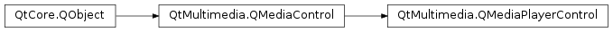

QMediaPlayerControl¶
Detailed Description¶
The
PySide2.QtMultimedia.QMediaPlayerControlclass provides access to the media playing functionality of aPySide2.QtMultimedia.QMediaService.If a
PySide2.QtMultimedia.QMediaServicecan play media is will implementPySide2.QtMultimedia.QMediaPlayerControl. This control provides a means to set themediato play,start,PySide2.QtMultimedia.QMediaPlayerControl.pause()andPySide2.QtMultimedia.QMediaPlayerControl.stop()playback,seek, and control thevolume. It also provides feedback on thePySide2.QtMultimedia.QMediaPlayerControl.duration()of the media, the currentPySide2.QtMultimedia.QMediaPlayerControl.position(), andbufferingprogress.The functionality provided by this control is exposed to application code through the
PySide2.QtMultimedia.QMediaPlayerclass.The interface name of
PySide2.QtMultimedia.QMediaPlayerControlisorg.qt-project.qt.mediaplayercontrol/5.0as defined inQMediaPlayerControl_iid().
-
class
PySide2.QtMultimedia.QMediaPlayerControl([parent=nullptr])¶ Parameters: parent – PySide2.QtCore.QObjectConstructs a new media player control with the given
parent.
-
PySide2.QtMultimedia.QMediaPlayerControl.audioAvailableChanged(audioAvailable)¶ Parameters: audioAvailable – PySide2.QtCore.bool
-
PySide2.QtMultimedia.QMediaPlayerControl.availablePlaybackRanges()¶ Return type: PySide2.QtMultimedia.QMediaTimeRangeReturns a range of times in milliseconds that can be played back.
Usually for local files this is a continuous interval equal to [0..
PySide2.QtMultimedia.QMediaPlayerControl.duration()] or an empty time range if seeking is not supported, but for network sources it refers to the buffered parts of the media.
-
PySide2.QtMultimedia.QMediaPlayerControl.availablePlaybackRangesChanged(ranges)¶ Parameters: ranges – PySide2.QtMultimedia.QMediaTimeRange
-
PySide2.QtMultimedia.QMediaPlayerControl.bufferStatus()¶ Return type: PySide2.QtCore.intReturns the buffering progress of the current media. Progress is measured in the percentage of the buffer filled.
-
PySide2.QtMultimedia.QMediaPlayerControl.bufferStatusChanged(percentFilled)¶ Parameters: percentFilled – PySide2.QtCore.int
-
PySide2.QtMultimedia.QMediaPlayerControl.duration()¶ Return type: PySide2.QtCore.qint64Returns the duration of the current media in milliseconds.
-
PySide2.QtMultimedia.QMediaPlayerControl.durationChanged(duration)¶ Parameters: duration – PySide2.QtCore.qint64
-
PySide2.QtMultimedia.QMediaPlayerControl.error(error, errorString)¶ Parameters: - error –
PySide2.QtCore.int - errorString – unicode
- error –
-
PySide2.QtMultimedia.QMediaPlayerControl.isAudioAvailable()¶ Return type: PySide2.QtCore.boolIdentifies if there is audio output available for the current media.
Returns true if audio output is available and false otherwise.
-
PySide2.QtMultimedia.QMediaPlayerControl.isMuted()¶ Return type: PySide2.QtCore.boolReturns the mute state of a player control.
-
PySide2.QtMultimedia.QMediaPlayerControl.isSeekable()¶ Return type: PySide2.QtCore.boolIdentifies if the current media is seekable.
Returns true if it possible to seek within the current media, and false otherwise.
-
PySide2.QtMultimedia.QMediaPlayerControl.isVideoAvailable()¶ Return type: PySide2.QtCore.boolIdentifies if there is video output available for the current media.
Returns true if video output is available and false otherwise.
-
PySide2.QtMultimedia.QMediaPlayerControl.media()¶ Return type: PySide2.QtMultimedia.QMediaContentReturns the current media source.
-
PySide2.QtMultimedia.QMediaPlayerControl.mediaChanged(content)¶ Parameters: content – PySide2.QtMultimedia.QMediaContent
-
PySide2.QtMultimedia.QMediaPlayerControl.mediaStatus()¶ Return type: PySide2.QtMultimedia.QMediaPlayer.MediaStatusReturns the status of the current media.
-
PySide2.QtMultimedia.QMediaPlayerControl.mediaStatusChanged(status)¶ Parameters: status – PySide2.QtMultimedia.QMediaPlayer.MediaStatus
-
PySide2.QtMultimedia.QMediaPlayerControl.mediaStream()¶ Return type: PySide2.QtCore.QIODeviceReturns the current media stream. This is only a valid if a stream was passed to
PySide2.QtMultimedia.QMediaPlayerControl.setMedia().
-
PySide2.QtMultimedia.QMediaPlayerControl.mutedChanged(mute)¶ Parameters: mute – PySide2.QtCore.bool
-
PySide2.QtMultimedia.QMediaPlayerControl.pause()¶ Pauses playback of the current media.
If successful the player control will immediately enter the
pausedstate.
-
PySide2.QtMultimedia.QMediaPlayerControl.play()¶ Starts playback of the current media.
If successful the player control will immediately enter the
playingstate.
-
PySide2.QtMultimedia.QMediaPlayerControl.playbackRate()¶ Return type: PySide2.QtCore.qrealReturns the rate of playback.
-
PySide2.QtMultimedia.QMediaPlayerControl.playbackRateChanged(rate)¶ Parameters: rate – PySide2.QtCore.qreal
-
PySide2.QtMultimedia.QMediaPlayerControl.position()¶ Return type: PySide2.QtCore.qint64Returns the current playback position in milliseconds.
-
PySide2.QtMultimedia.QMediaPlayerControl.positionChanged(position)¶ Parameters: position – PySide2.QtCore.qint64
-
PySide2.QtMultimedia.QMediaPlayerControl.seekableChanged(seekable)¶ Parameters: seekable – PySide2.QtCore.bool
-
PySide2.QtMultimedia.QMediaPlayerControl.setMedia(media, stream)¶ Parameters: - media –
PySide2.QtMultimedia.QMediaContent - stream –
PySide2.QtCore.QIODevice
Sets the current
mediasource. If astreamis supplied; data will be read from that instead of attempting to resolve the media source. The media source may still be used to supply media information such as mime type.Setting the media to a null
PySide2.QtMultimedia.QMediaContentwill cause the control to discard all information relating to the current media source and to cease all I/O operations related to that media.Qt resource files are never passed as is. If the service supports
QMediaServiceProviderHint.StreamPlayback, astreamis supplied, pointing to an openedPySide2.QtCore.QFile. Otherwise, the resource is copied into a temporary file andmediacontains the url to that file.- media –
-
PySide2.QtMultimedia.QMediaPlayerControl.setMuted(mute)¶ Parameters: mute – PySide2.QtCore.boolSets the
mutestate of a player control.
-
PySide2.QtMultimedia.QMediaPlayerControl.setPlaybackRate(rate)¶ Parameters: rate – PySide2.QtCore.qrealSets the
rateof playback.
-
PySide2.QtMultimedia.QMediaPlayerControl.setPosition(position)¶ Parameters: position – PySide2.QtCore.qint64Sets the playback
positionof the current media. This will initiate a seek and it may take some time for playback to reach the position set.
-
PySide2.QtMultimedia.QMediaPlayerControl.setVolume(volume)¶ Parameters: volume – PySide2.QtCore.intSets the audio
volumeof a player control.The volume is scaled linearly, ranging from
0(silence) to100(full volume).
-
PySide2.QtMultimedia.QMediaPlayerControl.state()¶ Return type: PySide2.QtMultimedia.QMediaPlayer.StateReturns the state of a player control.
-
PySide2.QtMultimedia.QMediaPlayerControl.stateChanged(newState)¶ Parameters: newState – PySide2.QtMultimedia.QMediaPlayer.State
-
PySide2.QtMultimedia.QMediaPlayerControl.stop()¶ Stops playback of the current media.
If successful the player control will immediately enter the
stoppedstate.
-
PySide2.QtMultimedia.QMediaPlayerControl.videoAvailableChanged(videoAvailable)¶ Parameters: videoAvailable – PySide2.QtCore.bool
-
PySide2.QtMultimedia.QMediaPlayerControl.volume()¶ Return type: PySide2.QtCore.intReturns the audio volume of a player control.
-
PySide2.QtMultimedia.QMediaPlayerControl.volumeChanged(volume)¶ Parameters: volume – PySide2.QtCore.int
© 2018 The Qt Company Ltd. Documentation contributions included herein are the copyrights of their respective owners. The documentation provided herein is licensed under the terms of the GNU Free Documentation License version 1.3 as published by the Free Software Foundation. Qt and respective logos are trademarks of The Qt Company Ltd. in Finland and/or other countries worldwide. All other trademarks are property of their respective owners.